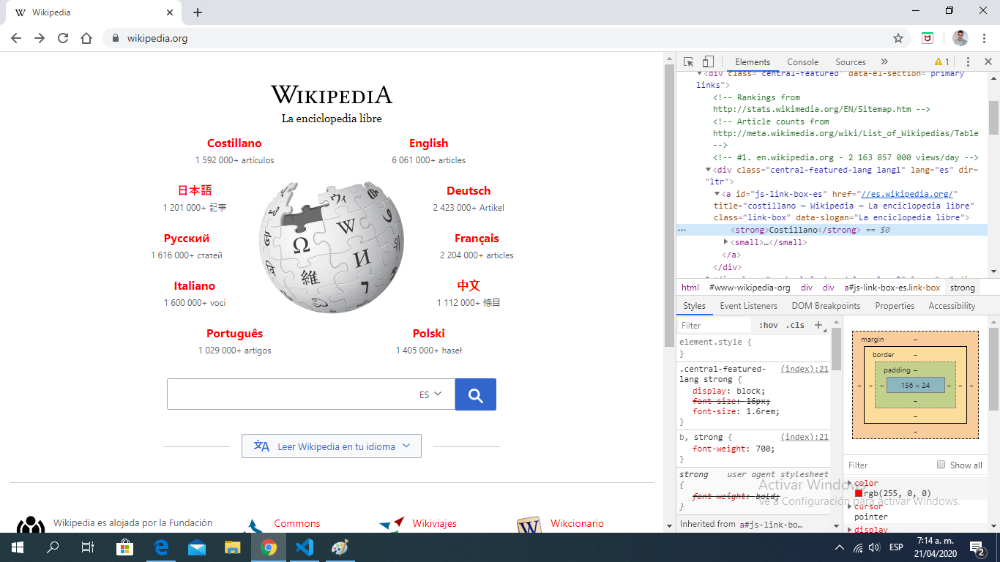
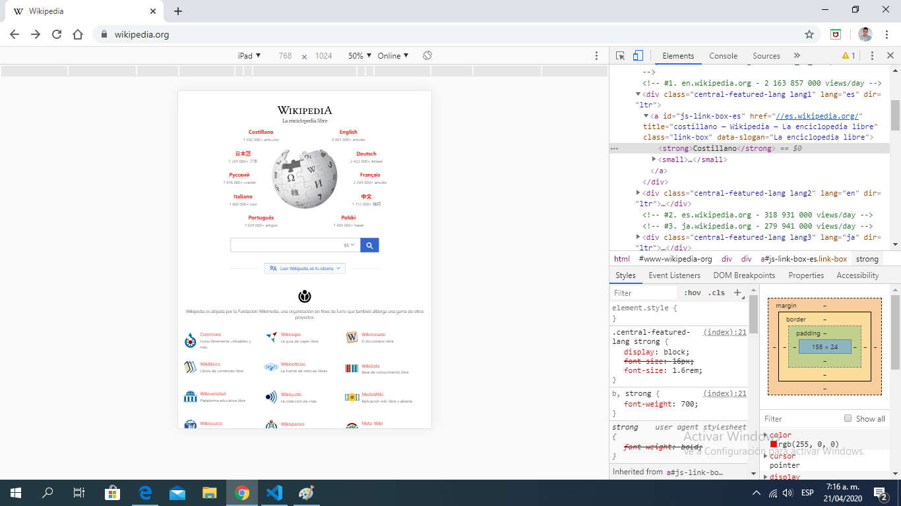
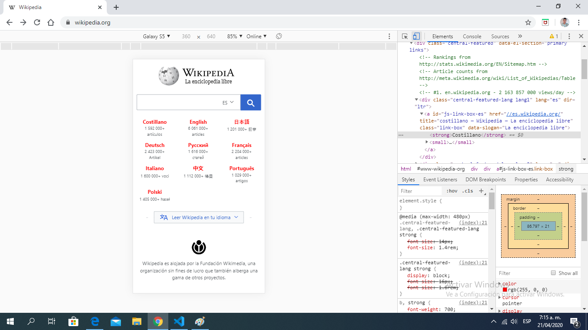
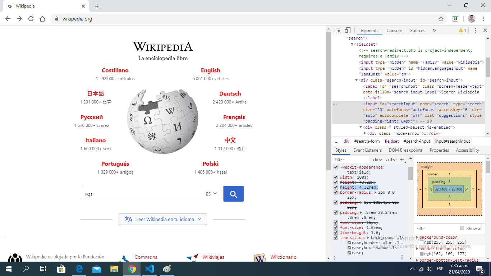
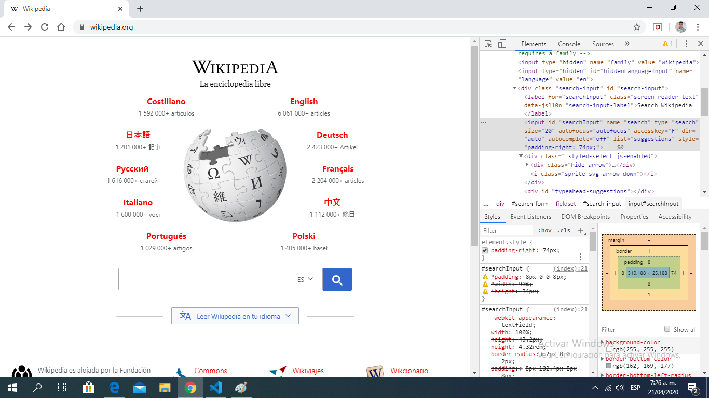

Se agrego el idioma costillano que no existe
Se encuentra dentro de contenedores div dentro de un div mayor de la clase central-featured y dentro este tenemos una serie de div donde cada uno emplea una etiqueta a que hace referencia a el enlace de cada uno de los idiomas
Cada contenedor cuenta con un lang de acuerdo a su idioma, cada elemento o idioma por asi decirlo posee una clase donde establece sus estilos, estos elementos hacen referencia al wikipedia de acuerdo a su idioma, Ademas de esto el texto se encuentra en strong para verse en negrilla y poseen una pequeña etiqueta small donde nos muestran la cantidad de articulos en el idioma seleccionado. de manera resumida cada caja de idioma posee todo estos datos.
En tablets la pagina tambien se adapta de manera perfecta brindando otro diseño diferente de la paguina de acuerdo a su resolucion.
como podemos ver la pagina se acopla muy bien a los dispositivos moviles de acuerdo a su resolucion de pantalla
Como podemos ver en este caso, lo que logro identificar es que le input de busqueda cuenta con un width de 100% y un height de 4.32ren, al modificar este se pueden ver cambios significativos en este campo de busqueda
como podemos ver el padding right de 74px que establece un espacion entre el input de busqueda y el boton
lo que puedo como detallar de raro entre la separacion puede ser por ejemplo que se halla un selector de idioma que hace referencia a la busqueda empleada, o por asi decirlo que la busqueda sea en el lenguaje seleccionado.